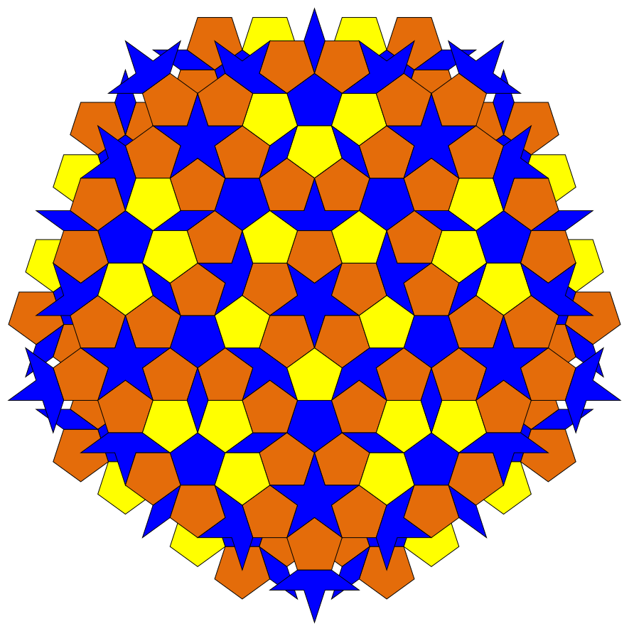
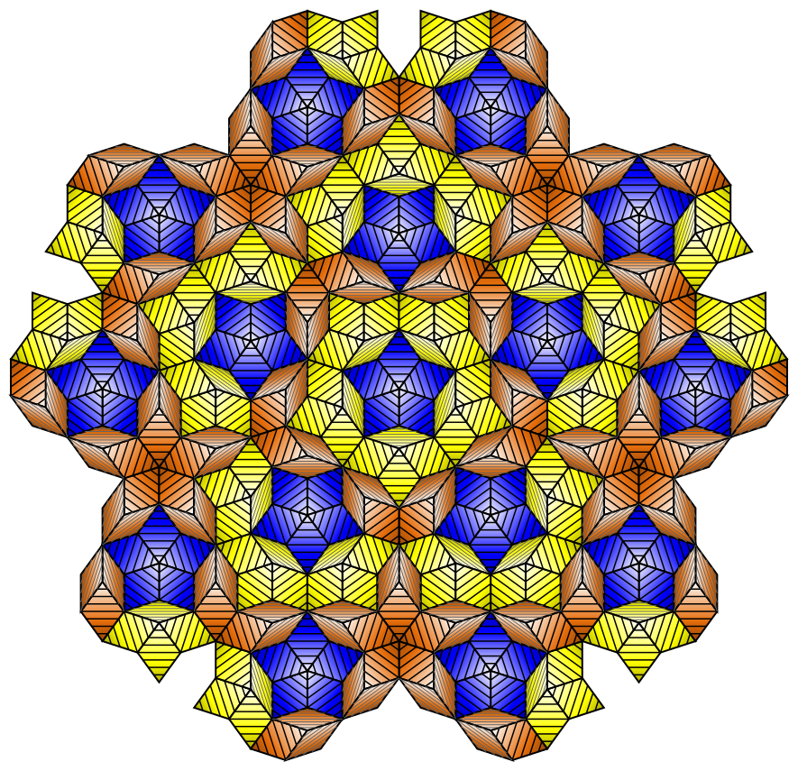
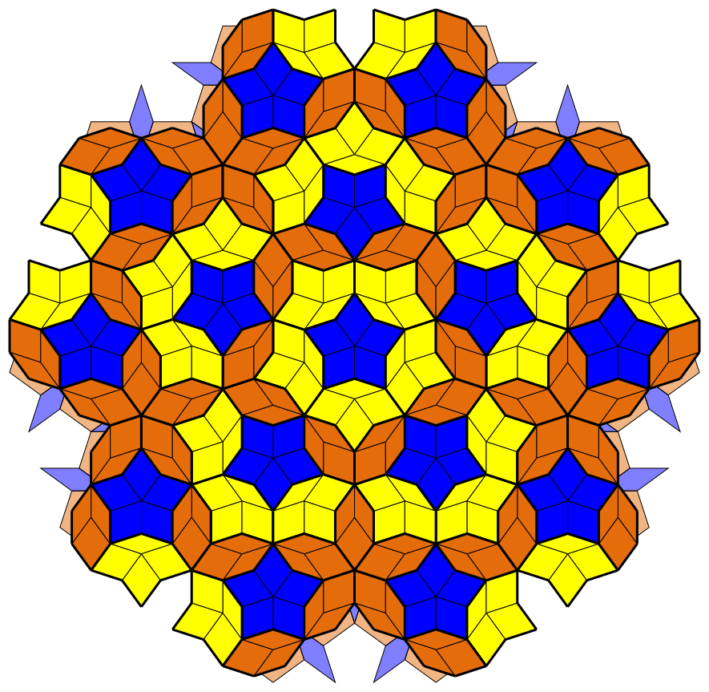
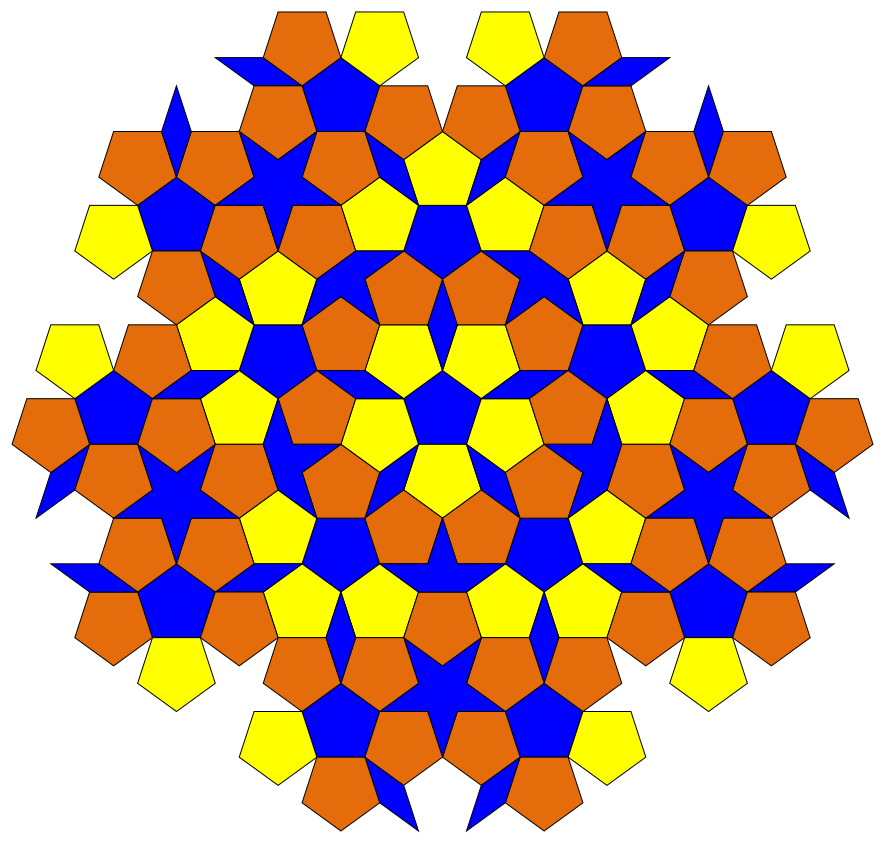
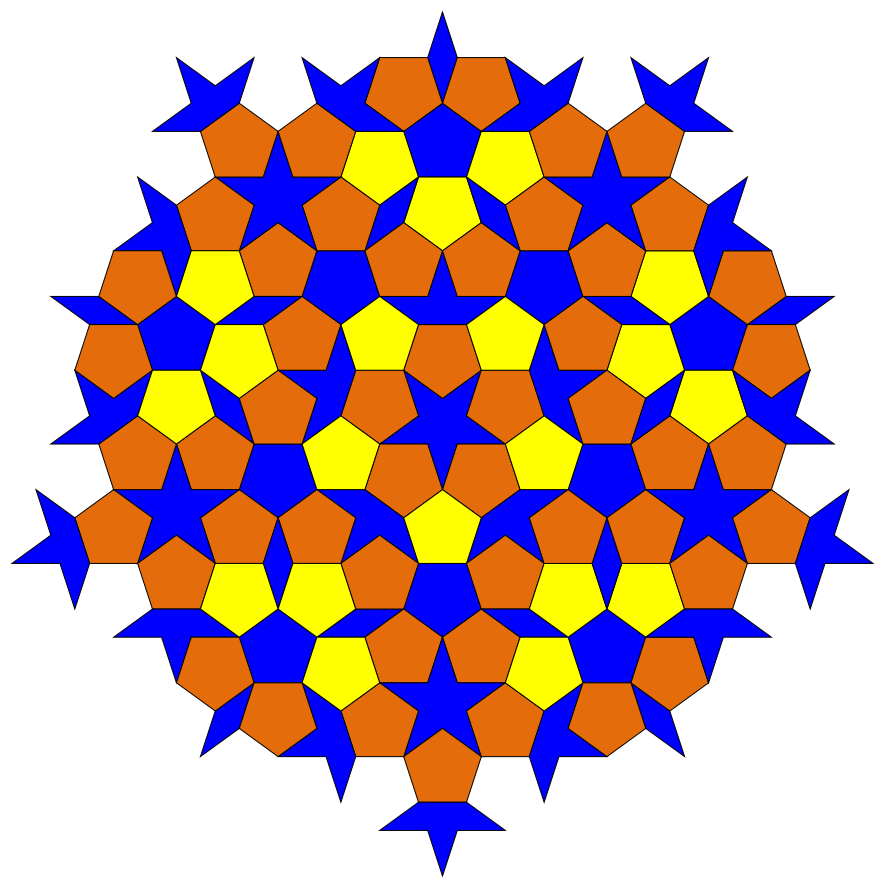

Output from svg-renderer.js, which draws the same render
list the canvas does. Nothing on the site uses it yet; the first
intended use is PDFs of the Sun/Star overlay. Regenerate with
node tools/svg-sample.mjs.
These are real SVG, so they scale without redrawing — open one on its
own and zoom in as far as you like.
overlay.svg — Sun and Star at
generation 2, both in one viewport on a shared scale, which is
what the Sun/Star page is about

rhombs.svg — the Sun's rhombs with the
gradient and the isogloss. 730 rhombs sharing 46 gradient
definitions, and no clip paths: the contour lines end on the
rhomb boundary, so they need none

layered.svg — pentagons under rhombs,
the pentagons transparent and the rhombs stroked by dihedral
fold: thin for a ridge, thick for a valley

sun.svg and
star.svg — the two seeds alone, as the
page shows them side by side. Note they are not reflections of
each other


deca.svg — the deca patch, centered on the
common point of its three pentagons